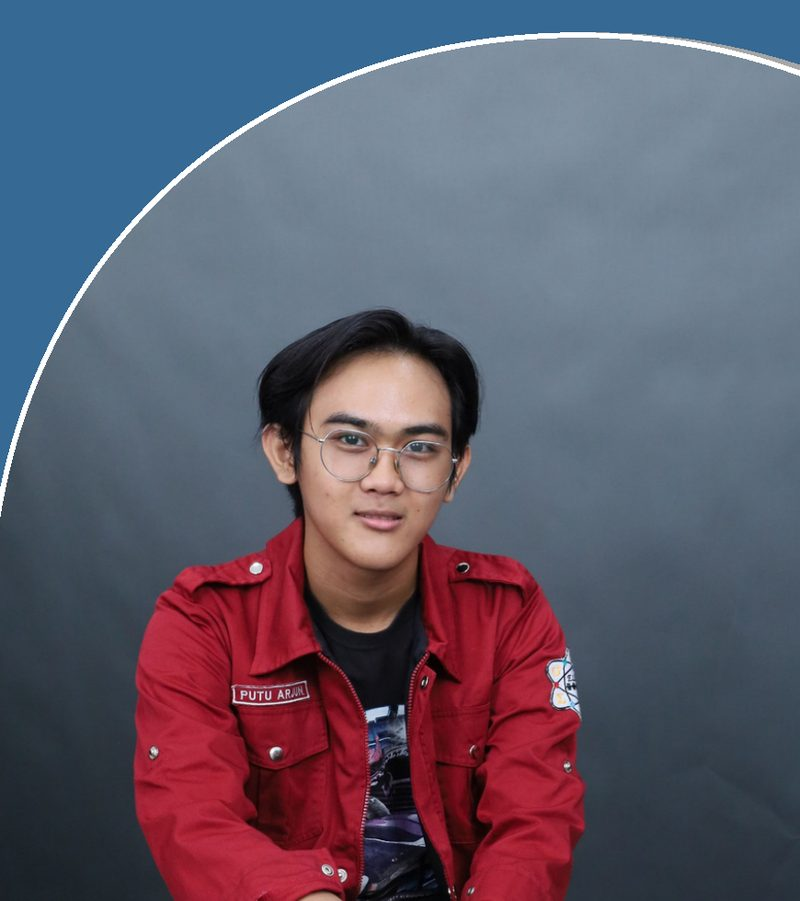

Industrial Engineering · Production Systems
Industrial Engineering Graduate — Production Planning, Control & Logistics.
Bachelor of Industrial Engineering from Universitas Gunadarma, focused on turning manufacturing and production-control processes into structured, data-informed systems — from shop-floor planning to dashboard-driven information systems.
How I approach a process — click a stage

Nickname
Arjun
Class of
2026
01 / About
Putu Arjun
Bekasi, Indonesia
I'm a Bachelor of Industrial Engineering graduate from Universitas Gunadarma (2022–2026), with a working focus on Production Planning Control & Logistics. My interest sits at the intersection of manufacturing operations and the systems that keep them running on schedule — production scheduling, inventory and material flow, quality/process control, and the data behind those decisions.
That focus has been shaped directly on the floor: a Production Planning Control internship at PT Astra Daihatsu Motor, and a PC & Logistics internship at PT Sugity Creatives, alongside a structured run of production system training — product design, process planning, production system design, and quality/production control. In parallel, I built a data analysis toolkit in R, Minitab 19, and IBM SPSS Statistics, and designed information system mockups that translate manual manufacturing workflows into dashboard driven digital processes.
PPC & Logistics
Key strength
Process Improvement
Key strength
Data Driven Analysis
Key strength
Professional focus: Production Planning & Control, Manufacturing Process Improvement, Supply Chain & Logistics coordination, Data Analysis, and Digitalization of production information systems.
02 / Education
Universitas Gunadarma
03 / Experience
Internships, lab roles, and organizational responsibilities — click any entry to expand.
04 / Featured Projects
Information-system mockups designed to digitalize manufacturing and production-control workflows.
05 / Skills
Grouped by how each is applied — from planning & control to statistical analysis.
06 / Certifications
All issued by Universitas Gunadarma, DQLab × UMN Xeratic, or partner organizations. Click any card to preview.
07 / For Recruiters
A quick read on where I'm useful from day one.
08 / Contact
Open to opportunities in Production Planning & Control, process improvement, and manufacturing data analysis.